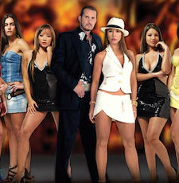

el flaco solozano es el mejor porque:

El Flaco Solórzano es un ser que se ve como un viejo pendejo, pero en esa apariencia de idiota ignorante se esconde un ser sabio, lleno de experiencia. En aspectos físicos, él es alto, fornido, con una gran figura robusta y extremidades largas. Tiene una cara que transmite carisma. Cuando habla, se le nota la experiencia; es humilde por naturaleza.
En cuanto a otros aspectos, él sabe cómo vivir la vida, debido a sus amplios conocimientos. Tiene una gran moral, es una gran persona, fuckboy por naturaleza, y a pesar de eso, sigue siendo buena persona con todos y con todo. Educado, respetuoso, todo un caballero. Emana carisma.
También, él es amigo de la más linda del programa (posiblemente es el amante de ella). Está lleno de personalidad, no necesita mucha cámara ni actuar como indio para dar risa. Fue amigo de Pedro el Escamoso, y fue pareja de una pareja de hermanas y también de su madre. Todo un ídolo.
Tiene disfraces salvajes, desde mafioso hasta de vampiro. Una bestia. También, él es limpio, se asegura de estar siempre pulcro y de mantener su ropa impecable. Un caballero. Está lleno de modales y valores. ¿Ya dije que es amigo de la más linda de la casa? (Posiblemente sea su amante).
Se dice que en Navidad alimenta a monos bebés y que está trabajando para que Veolia mantenga el país tan pulcro como sus prendas. Él no se mete en polémicas porque es un ser pacífico. No se inmuta por insultos porque sabe que no vale la pena pelear. No cae en problemas ni provocaciones. Siempre empático, nunca egoísta. Un amor de persona. No como los demás, que son todos falsos y egoístas.